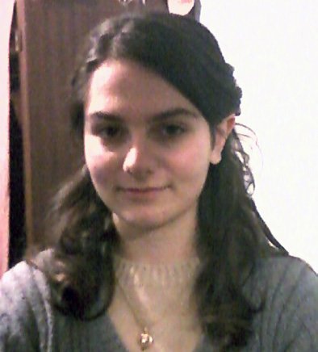
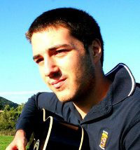
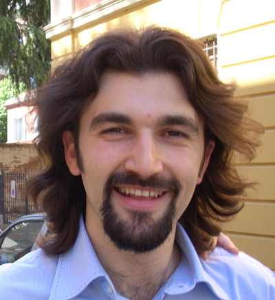
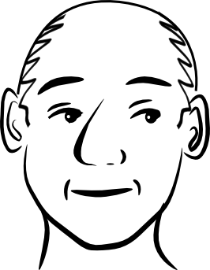
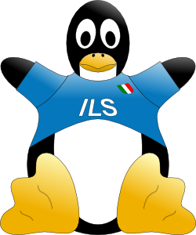
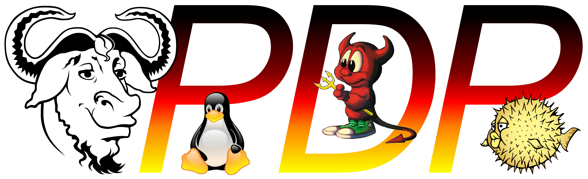
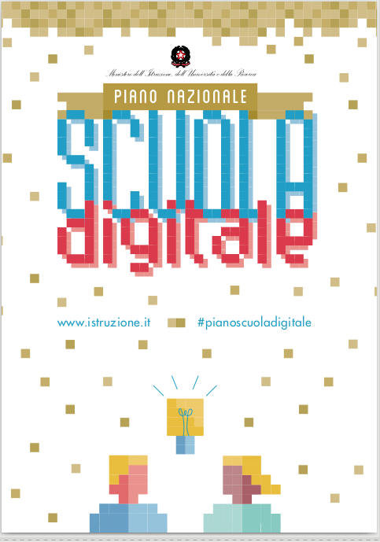

Dossier Scuola 2010 - 2016 una possibile rinascita? 2010 il Dossier Scuola raccontava motivazioni, strategie, progetti e casi di successo nell'intento di ritrarre lo stato dell'arte nell'adozione di Software Libero nella scuola italiana. 10000 copie sono state distribuite nel territorio italiano grazie a Italian Linux Society. In questi ultimi anni il movimento del Software Libero italiano ha proseguito i lavori con i convegni "Didattica Aperta" e con il canale "WiiLiberaLaLavagna" facilitato dal trascinatore Matteo Ruffoni con grandi risultati: 1000 iscritti e grande attivismo. Oggi, a distanza di 6 anni, il panorama si è drasticamente evoluto: la domanda di "capire come funzionano le cose" (cfr. Banzi) si è impennata così come la necessità di praticare le basi della sharing economy e far sperimentare ai ragazzi l'arricchimento reciproco nella condivisione della conoscenza. E anche a livello ministeriale ha avuto delle ripercussioni senza precedenti. È stato elaborato un Piano Nazionale Scuola Digitale (PNSD): quale il suo intento e, può essere o meno una concreta opportunità per potenziare il software libero nella scuola? Così come il movimento del CoderDojo e l'apprendimento sviluppato su code.org e la rete degli Animatori Digitali della Scuola Italiana gemmatasi dalla rete dei Campioni Digitali... e i PON i piani di innovazione nelle scuole Quali opportunità rappresenta questo scenario? E quali i rischi così come presentati da Rubini nel suo articolo "il nuovo che arretra" (pubblicato da fsfe.org)? In questo talk cercheremo di fare il punto della situazione Created by Luca Ferroni / @ferodafabriano
Linux Day 2010...! investiamo in oro grigio Fare il punto su Software Libero, Scuola, Rete Dirlo ai docenti e ai dirigenti scolastici 10.000 copie distribuite nel 2011 4 autori Enza Viccione
18 anni
Riccardo Serafini
19 anni
Luca Ferroni
30 anni
Fabio Prioretti
> 30 anni ;)
50 contributori docenti, apassionati, tecnici di laboratorio 1 grafica Martina Doppio della scuola Diskos 
Italian Linux Society idea e finanziamento stampa www.linux.it

PDP Free Software User Group mediawiki, contenuti e rete pdp.linux.it
Le liste di riferimento scuola@lists.linux.it wii_libera_la_lavagna@googlegroups.com E parte il documento... la rivoluzione è una scelta! (La lettera di Enza)
1. Motivazioni tangibili ridurre i costi, POF, sicurezza, innovazione, riuso
educative materia vs software, spirito civico, cooperazione, possibilità di approfondire
2. Strategie preparazione, progettazione, attuazione, risposte ai dubbi comuni
3. Software per la didattica navigazione, ufficio, multimedia, DSA, didattica, specifiche materie
4. Esperienze e progetti 17 istituti, 14 progetti, SoDiLinux, FUSS, DebianEdu, WII4DIDA, NetLive, Esperimenti di Cinema
IMPATTO RETE Matteo Ruffoni, Piergiovanna Grossi (Didattica Aperta), Pietro Pilolli (WiiLDOS), Claudio Carboncini (Matematica C3), Prof Cantaro (Majorana), Lucia Ferlino - Giovanni Caruso - Francesco Fusillo (SoDiLinux), Ezio Da Rin - prof. Marco Clochiatti (NetLive), LUG Chiaravalle (IIS Podesti Onesti), ... e tante altre esperienze locali
IMPATTO EVENTI Didattica Aperta, CONFSL11, CONFSL12, Didamatica, Linux Day, Brain jumble, SIAM, Università di Siena, ...
IMPATTO MEETINGS MIUR, USR Marche
MANCATO VALORE... www.dossierscuola.it
blog con redazione
tanti contenuti non letti
meetings nel vuoto...
Di cosa si parla nel 2016? Matteo Ruffoni racconta... wii libera la lavagna (1000) VIDEO
Il MIUR ha parlato di Classi 2.0 Scuola 2.0 ora...

4 passaggi Strumenti Competenze e contenuti Formazione Accompagnamento
Ambiti Connettività Ambienti virtuali, nuovi labs Carta d'identità digitale Registro elettronico e Open Data Dalle materie alle competenze Imprenditorialità Fuori dalle aule: alternanza Formare i docenti Animatori digitali sintesi su StartupItalia, Carlotta Balena (ott. 2015)
35 azioni finanziate (cifre indicative)
100ML + altri fondi 700ML + altri fondi da stanziamenti ordinari 50ML 1,5ML + altri fondi 3ML + altri fondi 1,5ML + altri fondi 16ML 8,5ML Il Software Libero ha soluzioni? Il Software Libero può dire la sua? Strutturiamo un nuovo Dossier Scuola sul PNSD? (10 persone per iniziare) ...e vogliamo offrire soluzioni in rete? Scuole Aziende Rete del Software Libero Comunità locale Possiamo rispondere al PNSD? parliamone su wii_libera_la_lavagna@googlegroups.com luca@befair.it, @ferodafabriano o www.befair.it
GRAZIE